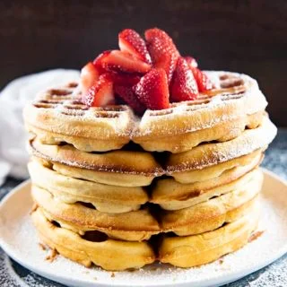

Belgian Waffles

This belgian waffle recipe is easy and makes delicious, authentic, Belgian waffles!
These waffles are perfectly crisp and golden on the outside while being light and fluffy on the inside!
Ingredients
- 2 ¼ Cups All Purpose Flour
- 1 Tablespoon Baking Powder
- 3 Tablesppons Sugar
- ½ Teaspoon Salt
- 1 Teaspoon Cinnamon
- 2 Large Eggs, Seperated
- ½ Cup Vegatable Oil
- 2 Cups Milk
- 1 Teaspoon Vanille Extract
Directions
- Preheat your waffle iron, spray with non-stick cooking spray and set aside.
- In a large bowl whisk together the flour, baking powder, sugar, salt, and cinnamon.
- In a medium bowl beat the egg whites with a hand mixer until stiff peaks form. Set aside.
- In a seperate medium bowl mix together the egg yolks, vegatable oil, milk, and vanilla extract.
- Add the egg yolk mixture to the dry ingredients and mix well.
- Fold in the egg whites.
- Pour the batter onto your hot waffle iron and cook accordingly to manufacturer's directions.**
- Serve immediately with butter, syrup, powdered sugar or any other favorite toppings.
Notes
**NOTE My waffle iron takes about ¾ cup batter per waffle.
Home |
Top